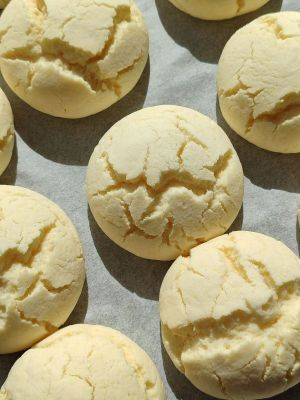

1. Drömmar
Drömmar är klassiska småkakor som ofta har en spröd konsistens och mild smak av vanilj.

Ger: cirka 40–45 kakor.
Ingredienser
- 100 g smör
- 3 dl strösocker
- 1 dl rapsolja
- 2 tsk vaniljsocker
- 1 tsk hjorthornssalt
- 4 dl vetemjöl
Gör så här
- Värm ugnen till 150 °C.
- Rör smör och socker mjukt.
- Tillsätt oljan lite i taget och blanda.
- Blanda vaniljsocker och hjorthornssalt med lite av mjölet.
- Rör ner blandningen och tillsätt resten av mjölet.
- Forma små bollar och lägg dem på en plåt med bakplåtspapper.
- Grädda i 15–20 minuter och låt kakorna svalna på plåten.